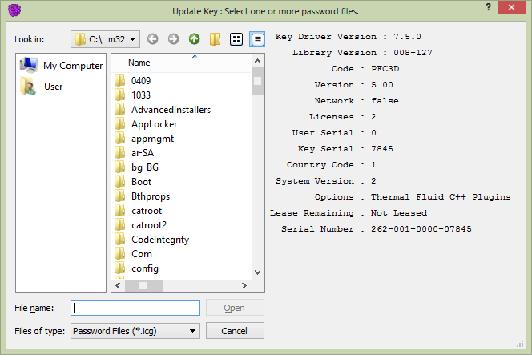

更新密钥对话框
当用户更改其当前许可（添加选项、启动租用等）时，使用更新密钥对话框修改安全密钥（security key），以适应新的许可配置。Itasca 会向用户发送一个或多个密码文件（许可中每更改/添加一项都需要单独的密码文件）。使用该对话框处理这些文件的步骤如下。
- Itasca 会针对要进行的许可更改发送一个或多个密码文件。请准备好这些文件。
- 确保要更新的密钥已连接到计算机。
- 启动PFC。
- 转到更新密钥对话框；依次选择菜单。


图 1：更新密钥对话框。点击可在新窗口中放大。
5. 使用对话框控件选择用于更新密钥的密码文件。通过对每个密码文件逐一执行这些步骤，可以完成该过程。不过，同时指定所有密码文件更简单快捷（按住 Ctrl 键并单击所需的每个文件；这要求所有文件都位于同一文件夹中）。
6. 过程成功完成会在消息对话框中给出提示。未成功完成将以错误终止。如果出现错误，请立即联系提供密码文件的代码销售办公室或代理，以解决问题。
| 这些内容对您有帮助吗？… 版权与免责声明 | FLAC3D © 2019, Itasca | 原文更新于 2020 年 10 月 8 日 |